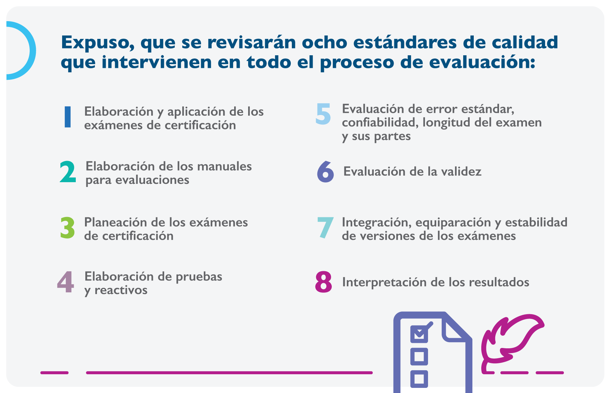
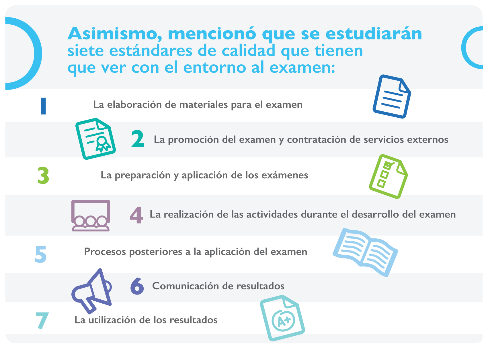

Con la participación de 14 consejos de especialidades inició el primer curso: Estándares de calidad para el examen de certificación y recertificación, que tiene el propósito de homogeneizar en calidad a los exámenes para la certificación y recertificación, que aplicande los 47 consejos que integran el Comité Normativo Nacional de Consejos de Especialidades Médicas, CONACEM.
“Estos indicadores de calidad son fundamentales porque tienen que ver con los resultados, y cuyasu finalidad es proporcionar criterios para la evaluación de pruebas y brindar pautas para evaluar la su validez de las pruebas para la certificación y recertificación de sus Consejos, y con ellos, ofrecer un marco de referencia para garantizar que se aborden cuestiones relevantes”,, afirmó el Dr. José Ignacio Santos Preciado, presidente del CONACEM, durante la inauguración del curso, el 24 de octubre pasado.


Este curso, planteado como un esfuerzo para contribuir con la profesionalización y desarrollo de los procesos aplicables para los exámenes, tiene una duración de 72 horas, impartido en 12 semanas con sesiones sincrónicas en línea de tres horas y tres horas de estudio autónomo en forma asincrónica en la plataforma online.
El 31 de marzo de 2022, durante la asamblea anual del CONACEM,
se expuso la necesidad de desarrollar estrategias para el
fortalecimiento
de las actividades sustantivas de los Consejos de Especialidades
Médicas
y del mismo CONACEM, conforme las atribuciones que emanan de los
estatutos
vigentes y con la participación del Dr. Víctor Hugo Olmedo
Canchola, experto
en la materia y coordinador de este primer curso, se detectó la
necesidad de trabajar
en estándares de calidad homogéneos para todos los consejos.